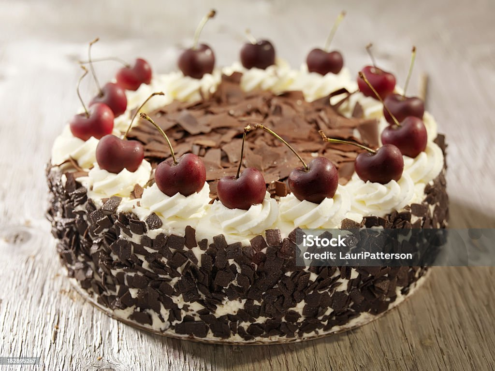

Чёрный лес или «Шварцвальд», созданный в
Германии в 30-е годы прошлого века
Представляя самые вкусные торты мира, нельзя не
упомянуть этот знаменитый десерт, известный многим
хозяйкам под названием «Пьяная вишня». Своё оригинальное
название он получил от названия местности, где был впервые придуман и изготовлен.
В основе торта используются коржи из шоколадного генуэзского
бисквита, чередующиеся со взбитыми сливками и сочными ягодами
свежей вишни. Особый вкус и аромат ему придаёт пропитка из черешневого бренди
Киршвассер, который изготовлен в Шварцвальде. В качестве декора кондитерского
изделия используются сливки и хлопья натурального горького шоколада, напоминающие «чёрный лес».
Оформление заказа